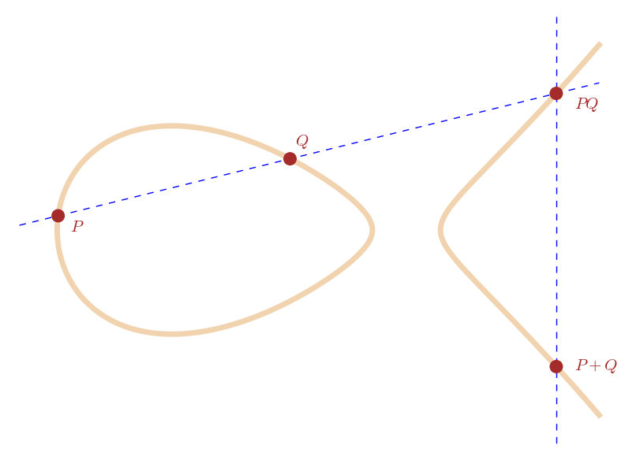
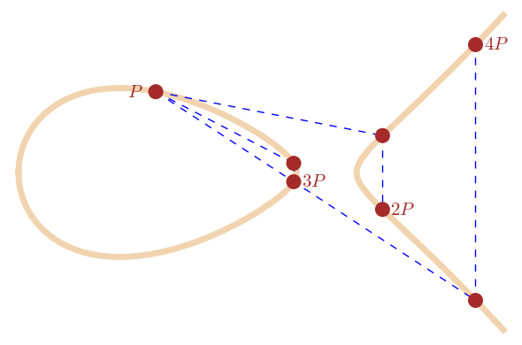

Introduction to the Theory of Elliptic Curves
Elliptic curves are a subject, simple to construct and ubiquitous, that have found themselves at the forefront of Number Theory and Algebraic Geometry research. The subject has roots in some of the oldest Mathematics, and its modern connections tie it to an incredible span of research including fluid flow, sphere packing, modular forms, and string theory. Elliptic curves are the degree three nonsingular algebraic plane curves with at least one rational point.
Their existence was considered by Diophantus in the 2nd century a.d. in his text Arithmetica. The question he originally posed has been rephrased in modern language: “To divide a given number into two numbers such that their product is a cube minus its side.” That is, given \(a \in \mathbb N\) find \(x,y \in \mathbb Z\) such that \[y(a-y) = x^3 - x.\]
Elliptic curves were the topic of my undergraduate thesis, which you can download here.
Most individuals are familiar with the plane conics, the degree two nonsingular algebraic curves. Elliptic curves, in some sense, are their slightly more complicated, yet seemingly infinitely more subtle, older sibling. This will be realized later through the concept of genus.
Elliptic curves are contemporarily thought of as plane curves, however they originally arose in the context of calculating arc-lengths of ellipses. It is these arc-lengths of ellipses which in part created elliptic curve’s early ubiquity. These are the elliptic integrals
\[ \int R(t,\sqrt{P(t)}) dt, \]
where \(P(t)\) is a degree three or four nonsingular polynomial and \(R\) is a rational function of \(\sqrt{P(t)}\) and \(t\). An example might be derived from the pendulum, such as:
\[ \int \frac{d\theta}{\sqrt{C + \cos \theta}} = - \int \frac{dx}{\sqrt{(1-x^2)(C+x)}} = \int \frac{dx}{y}, \text{ where } y^2 = (1-x^2)(C+x).\]
Apollonius first considered calculating the arc-length of an ellipse around 200 b.c. and found that he was unable to do it. This problem defied progress until the 17th century when Euler and others found infinite series expressions for arc-lengths. Further, Euler discovered as surprising group law for these infinite series.
\[ \int_{\infty}^{x_1} \frac{dx}{y} + \int_{\infty}^{x_2} \frac{dx}{y} = \int_{\infty}^{x_3} \frac{dx}{y}.\]
In 1687 Newton wrote down the majority of Bezout’s Theorem, which states that given two irreducible degree curves their intersection counting multiplicity has the product of the degrees of the curves. This gave algebraic motivation for what had already been observed: there is group structure to the rational points of an elliptic curve.
 
Point Addition and Multiplication
Elliptic integrals, before connecting to elliptic curves, were inverted and considered as elliptic functions by mathematicians such as Abel, Gauss, Jacobi, and notably Weierstraß. The motivation for doing so is that the inverse of \(\int \frac{dx}{\sqrt{1-x^2}} = \arcsin(x)\) is significantly more friendly a function.
While it may be that Diophantus considered solutions to the equation describing an elliptic curve, their modern formulation rests on their analytic construction as the doubly periodic functions over \(\mathbb C\). These are Weierstraß’ elliptic functions
\[\wp:\mathbb C \to \mathbb C / \Lambda \text{ for some } \Lambda \cong \mathbb Z\omega_1 +\mathbb Z\omega_2,\]
\[ \wp(z \; \omega_1,\omega_2) = \frac{1}{z^2} + \sum_{n^2+m^2 \ne 0} \left( \frac{1}{(z+m\omega_1+n\omega_2)^2} -\frac{1}{\left(m\omega_1+n\omega_2\right)^2} \right) ,\]
\[\wp(z) = \frac{1}{z^2} + \sum_{\omega \in \Lambda - \{ 0\} } \left( \frac{1}{(z-\omega)^2} -\frac{1}{\omega}^2 \right),\]
where \(\omega_1\) and \(\omega_2\) generate the complex lattice \(\Lambda = \{ \mathbb Z \omega_1 + \mathbb Z \omega_2 \}\), or if \(\omega_2\) is normalized to 1, simply \(\Lambda = \mathbb Z \omega + \mathbb Z\).


Indeed, what these mathematicians surrounding the 18th Century had discovered is that calculating arc-lengths of ellipses naturally involved thinking about the problem in an algebraically closed field such as the complex numbers \(\mathbb C\), where the problem is translated to one with doubly periodic structure. This structure is isomorphic to that of a torus. One way to think of this is by “identifying edges.” If \(z\) drifts of the top of the fundamental parallelogram, its image re-appears on the bottom of the parallelogram under a doubly periodic function, and similarly for drifting over the side. This is stating that as a Riemann surface an elliptic function have a topology with a single hole, like a torus, and that it has genus \(g = 1\). This suggests a major separation in the theory of elliptic curves from those of conics, since the conics are genus zero curves.
Weierstraß discovered that all doubly periodic functions could be expressed through his \(\wp\) function, and that it followed the differential equation:
\[ \wp' (z)^2 = 4 \wp^3 (z) -g_4 \wp (z) - g_6,\]
where \(g_4 = 60G_4\) and \(g_6 = 140G_6\) and \(G_n\) is Eisenstein’s series given by \[ G_n = \sum_{\omega \neq 0} \frac{1}{\omega^n}.\]
Corresponding to this complex doubly periodic structure, Weierstraß had found a way to classify the equations of elliptic curves. Any degree three nonsingular algebraic plane curve over a field \(k\) can be transformed to Weierstraß form:
\[y^2 = x^3 + ax + b, \text{ provided } \text{characteristic}(k) \neq 2,3,\]
\[\text{ and always at least } y^2 + a_1 xy + a_3y = x^3 + a_2x^2 + a_4 x + a_6 \text{ even if } \text{characteristic}(k) = 2,3. \]
Indeed, Elliptic Curves defined over the complex numbers \(\mathbb C\) are isomorphic to complex lattices given by \(\mathbb C / \Lambda\) for a lattice \(\Lambda\). Startling connections were born of this fact.
The Eisenstein series are examples of modular forms, which are incredibly deep number theoretical objects, described by complex functions which satisfy certain invariance properties under their arguments translation by particular matrix groups. Elliptic Curves are a seemingly simple class of curves, with a natural group law arising from Bezout’s theorem and Algebra-Geometric arguments, and yet we have found that they are tied into Number Theory in profound and unanticipated ways.
To a Weierstraß equation is associated two useful invariants: the \(j\)-invariant and the \(\Delta\) discriminant. Klein’s \(j\)-Invariant is among other things, a representative of the elliptic curve’s isomorphism class over the algebraically closure, and the discriminant is a polynomial defined as a product such that when a polynomial has factors with multiplicity it vanishes, that is to say \(\Delta = 0\) when the curve is singular.
These are found to have the following equations
\[ \Delta=g_2^3-27g_3^2, \]
\[ j(\tau) = 1728 \frac{g_2^3}{\Delta}. \]

The 20th Century saw great progress in Algebraic-Geometry and as a result an elliptic curve’s rational points, denoted \(E(\mathbb Q)\), are somewhat better understood. In 1922 the Mordell-Weil Theorem was proven, which states that all abelian varieties over number fields are finitely generated abelian groups. Later in 1984 a conjecture by Mordell was proven by Faltings stating that the genus 0 curves over \(\mathbb Q\) have either \(\emptyset\) or infinitely many points, genus 1 curves have \(\emptyset\), finitely many, or infinitely many \(\mathbb Q\)-points.
However, simultaneous progress was being made in the theory of Modular Forms. Ramanujan defined his \(\tau\) function by the power series expansion of the discriminant \(\Delta\).
\[\sum_{n\geq 1}\tau(n)q^n=q\prod_{n\geq 1}(1-q^n)^{24} =\Delta(z),\]
\[\text{ where } q=\exp(2\pi iz).\]
Ramanujan was able to conjecture powerful number theoretic congruences describing this \(\tau\) function through modular forms. Separately Ramanujan used Eisenstein series and other modular forms to produce astounding congruences describing the partition function \(p(n)\), the function which counts the ways a whole number can be partitioned not counting ordering. The following have been established as theory.
\[ \begin{align} \tau(mn) = \tau(m) \tau(n) \text{ if } m \text{ and } n \text{ are relatively prime,} \\ \tau(p^{r + 1}) = \tau(p)\tau(p^r) - p^{11}\tau(p^{r - 1}), \\ |\tau(p)| \leq 2p^{11/2} \text{ for primes } p. \\ \end{align} \]
\[ \begin{align} p(5k+4) & \equiv 0 \pmod 5 \\ p(7k+5) & \equiv 0 \pmod 7 \\ p(11k+6) & \equiv 0 \pmod {11}. \end{align} \]

Image Credit: The Concinnitas Project
These are some of the most beautiful congruences in Number Theory and Mathematics. In a 1972 lecture by Freeman Dyson on the Missed Opportunities between Mathematics and Physics, he begins with the story of the following MacDonald equation for Ramanujan’s Tau Function. The MacDonald Equation is an astonishing formula, but to have also found connections to physics highlights the depth to which Ramanujan’s \(\tau\)-function, born out of the discriminant \(\Delta\), reaches into the abstract world.
In the early 1990s Andrew Wiles established the Modularity Theorem, an equivalence between modular forms and the rational structure of an elliptic curve \(E(\mathbb Q)\), and consequently proved Fermat’s Last Theorem. After the 20th Century, Elliptic Curves have found themselves amidst deep Number Theory whilst being employed in applications from cryptography to engineering. The Birch and Swinnerton-Dyer conjecture remains open, and we have yet to fully understand the rank of the group \(E(\mathbb Q)\). Elliptic Curves may have been with us from the very origins of algebra, but we are still just beginning to understand their tremendous structure.
Sources
- Alice Silverberg : Ranks Cheat Sheet
- Dale Husemöller : Elliptic Curves
- Ezra Brown and Bruce T. Myers : Elliptic Curves from Mordell to Diophantus and Back
- Freeman Dyson : Missed Opportunities
- J.S. Milne : Elliptic Curves
- Joseph H. Silverman : Advanced Topics in the Arithmetic of Elliptic Curves
- Joseph H. Silverman : Elliptic Curves
- Neal I. Koblitz : Elliptic Curves and Modular Forms
- Silverman and Tate : Rational Points on Elliptic Curves
- Tom M. Apostol : Modular Functions and Dirichlet Series in Number Theory